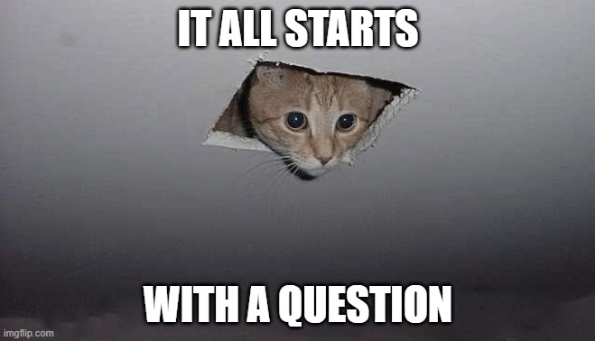
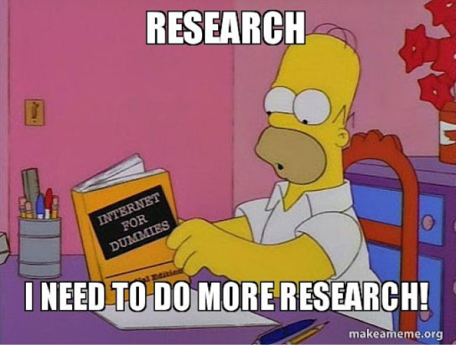

/o meni
Rojen pred Googlom, začel programirati pribli쬹o isti čas, kot je prišel Google. To je kar pomagalo :)
Hekerska miselnost ne pomeni nezakonitega vdiranja v računalniške sisteme. Gre za način pristopa k problemom s specifičnim naborom stališč in prepričanj. Gre za kreativno premagovanje omejitev, iskanje pametnih rešitev ter nenehno učenje in raziskovanje.
Hekerska miselnost ne pomeni nezakonitega vdiranja v računalniške sisteme. Gre za način pristopa k problemom s specifičnim naborom stališč in prepričanj. Gre za kreativno premagovanje omejitev, iskanje pametnih rešitev ter nenehno učenje in raziskovanje.
Radovednost in 쬰ja po znanju

Hekerje 쬰ne globoka 쬰lja po razumevanju delovanja stvari. Radi secirajo sisteme, raziskujejo njihovo notranje delovanje in premikajo meje. Ta radovednost spodbuja njihovo nenehno učenje in eksperimentiranje.
Spretnost pri reševanju problemov
Ovire vidijo kot izzive, ki jih je treba premagati, ne pa kot ovire. U쬴vajo v razstavljanju stvari, ugotavljanju, kako delujejo, in nato iskanju inovativnih načinov za njihovo izboljšanje ali preoblikovanje. To pogosto vključuje lateralno razmišljanje in iskanje nekonvencionalnih rešitev.
"Zmorem" odnos in vztrajnost
Hekerji ne odnehajo zlahka. Vztrajni so v svojem prizadevanju za znanjem in rešitvami. Verjamejo, da je z dovolj truda in ustvarjalnosti skoraj vse mogoče. Sprejemajo eksperimentiranje in se ne bojijo neuspeha, saj ga vidijo kot prilo쬹ost za učenje.
Prepričanje v deljenje in sodelovanje
Tradicionalna hekerska kultura ceni programsko opremo z odprto kodo in izmenjavo znanja. Verjamejo, da bi morale biti informacije brezplačne in dostopne ter da sodelovanje vodi do boljših rešitev.
Zdravo neupoštevanje avtoritete in konvencij
Hekerji pogosto izzivajo status quo. Dvomijo o tradicionalnih načinih dela in se ne bojijo razmišljati izven okvirov. To ne pomeni nujno nespoštovanja avtoritete, ampak pripravljenost za dvom o predpostavkah in raziskovanje alternativnih pristopov.
Igriv in raziskovalen pristop

Hekerji u쬴vajo v popravljanju, DIY, raziskovanju novih tehnologij in premikanju meja mo쬹ega. Ta igriv pristop spodbuja ustvarjalnost in inovativnost.
Kako stvari delujejo?
Ste se kdaj vprasali, kaj vse se mora zgoditi, da lahko prijatelji posljete Snap?